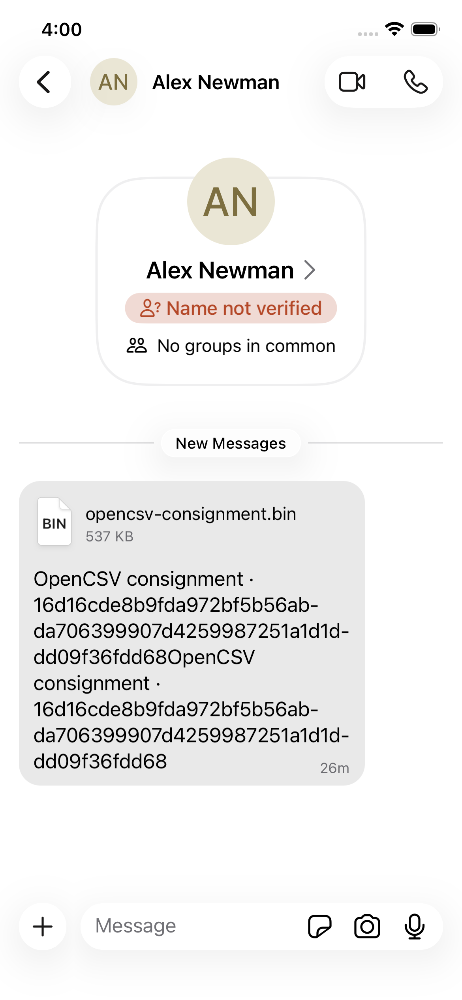
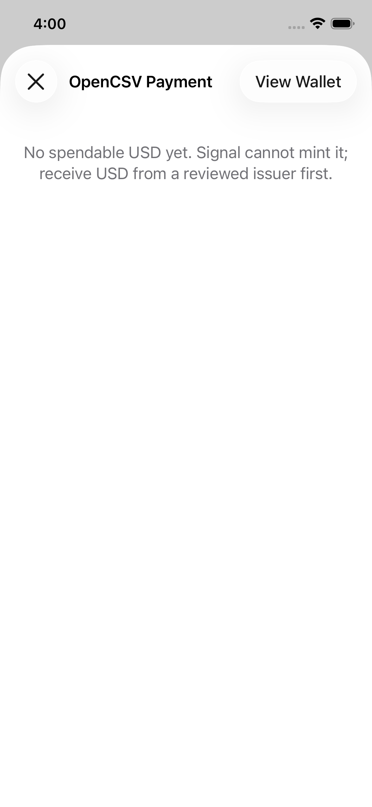

The complete live round trip
This 38-second cut contains only real iOS simulator footage. Waiting time was removed, but the Signal interface and transaction states were not reconstructed. Carol sent 25 Test USD to Bob; Bob then sent 10 back. The anchors confirmed at signet heights 316611 and 316620. Test USD has no monetary or redemption value.
The issuer mints 100 Test USD
A mint is public: asset and amount go into the anchor, so anyone
can audit supply. In proof lineage v3, the coin proof itself proves
knowledge of the issuer seed bound by genesis. New anchors use the
unspendable marker OP_0 ∥ sha256(OP_RETURN); the historical
capture below predates that live-found migration.

The payment arrives as a Signal message
The consignment — coin openings plus a history-independent recursive proof of the coin's entire history — travels off-chain, end-to-end encrypted, as an ordinary Signal attachment. Signal transport carries ciphertext; after normal message decryption, the local OpenCSV wallet verifies the attachment.

The phone verifies — alone
The recipient's phone verifies the recursive proof, syncs compact block filters (kilobytes), finds the anchor block via the marker, and checks locally that the coin was never spent before. No RPC, no indexer, no trusted server. The recorded build below waited for six confirmations and correctly failed closed at insufficient depth. The current draft adds a narrower provisional capability: after full proof, ownership, binding, exact-transaction, layout, and confirmed-prefix exclusion checks, it can expose the coins as available before settlement while naming replacement risk. Download alone is never enough.

Bob sends 10 back
Bob's recipient key prefills from the Signal chat. The v4
one-input/payment-plus-change path spent the received 25 Test USD coin
into 10 for Carol and 15 change. The live simulator generated the proof
locally in 6.237 seconds, then signed and persisted the exact Bitcoin
transaction in 42 ms. The complete instrumented operation took 5m28s
because chain verification ran for 77.861s before proving and 93.163s
before signing, with backup/recovery scheduling between phases. That is
an acceptance-harness receipt, not a consumer-latency claim. Rust—not
Swift or an anchor server—reserves Bitcoin fees,
derives change, fixes the context, persists signed bytes, and relays. A
child may spend a verified unconfirmed coin, but Rust re-observes the exact
parent after selection and again before signing; disappearance or
replacement freezes the child. The separate
Bitcoin performance explainer shows why this
asset dependency does not spend the parent's Bitcoin UTXO and therefore
is not an ordinary Bitcoin ancestor chain. Return transaction
a3a3f4b1…12dc0a
later confirmed at height 316620.
The CLI verifies Bob's transfer
On the other side, the text wallet runs the same verification: proof,
anchor position, local exclusion check. VERIFIED — the two
clients agree because the protocol is the proof, not the server.

A double-spend dies; the supply audits clean
Re-spending the same coin produces a conflicting anchor — the
first-occurrence rule rejects it at a real block location
(NullifierConflict). Meanwhile the public mint/redeem stream
sums the supply: anyone can check it, no permission needed.